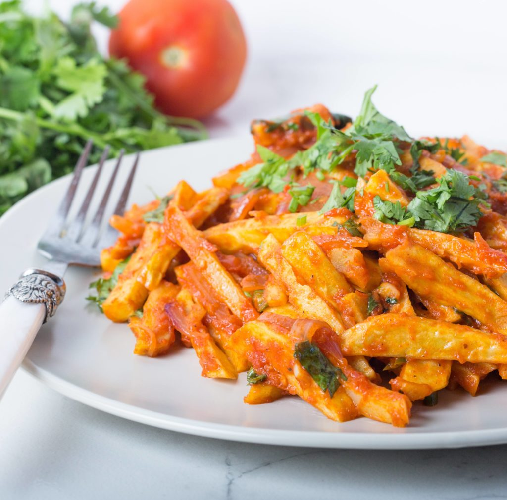

<DOCTYPE html>
  <html>
  <head>
  <title>Chips Masala</title>
  <link href="css/styles.css"rel="stylesheet"type="text/css">
  <link href="../css/bootstrap.css"rel="stylesheet"type="text/css">
  <link href="../css/aos.css"rel="stylesheet"type="text/css">
  <script src="../js/scripts.js"charset="utf-8"></script>
  <script src="../js/aos.js" charset="utf-8"></script>
  <script src="../js/jquery-3.3.1.js" charset="utf-8"></script>
</head>
    <body>
      <div class="container-fluid">
      <div class="float-left-area">
        <div data-aos="fade-up-right" data-aos-duration="1000" class="inner-left">
        <h2><b>About us</b></h2>
        <p>Culinary Experience is a webpage where we get to show you how to prepare local <b>Kenyan Cuisine.</b></p>
      </div>
      </div>
      <div data-aos="fade-up-right" data-aos-duration="1000" class="float-right-area">
        <div class="inner-right">
          <ul class="nav nav-tabs">
            <li class="active"><a>Chips Masala</a><li>
              <h3>
                <b>Ingredients:</b>
              </h3>
              <ol>
                <li>4-5 potatoes, cut lengthwise and double fried (fry for 3-4 mins, take out on to a paper towel and let cool for 5 mins.
                  Fry again for just 1-2 mins</li>
                <li>3 tomatoes, pureed</li>
                <li>1 tbsp oil</li>
                <li>1 large onion, sliced lengthwise</li>
                <li>1-2 cloves of garlic, minced</li>
                <li>1-2 green chillies, chopped</li>
                <li>1 tbsp tomato paste</li>
                <li>Salt to taste</li>
                <li>Freshly ground black pepper </li>
                <li>1/2 tsp chili powder (optional)</li>
                <li>Coriander leaves, chopped</li>
              </ol>

              <h3>
                <b>Procedure:</b>
              </h3>
              <ul>
                <li>Fry the onions in oil until translucent.</li>
                <li>Add garlic and green chillies and cook for 30 seconds.</li>
                <li>Add the tomatoes, tomato paste, salt, pepper and chill powder and let cook for 4-5 minutes.</li>
                <li>Add the fried chips, stir and garnish with coriander leaves.</li>
              </ul>
            
            <a href="https://www.youtube.com/watch?v=4sLbbDnbLEo">Watch The Video Here</a>
        </div>
      </div>
            </ul>
          </div>
          <li>
          </li>
      <script>
    AOS.init();
  </script>
    </body>
  </html>
